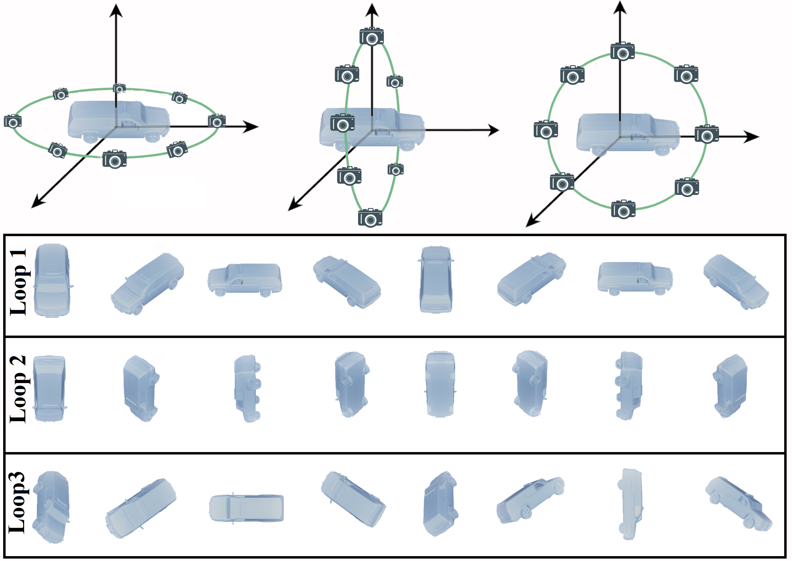
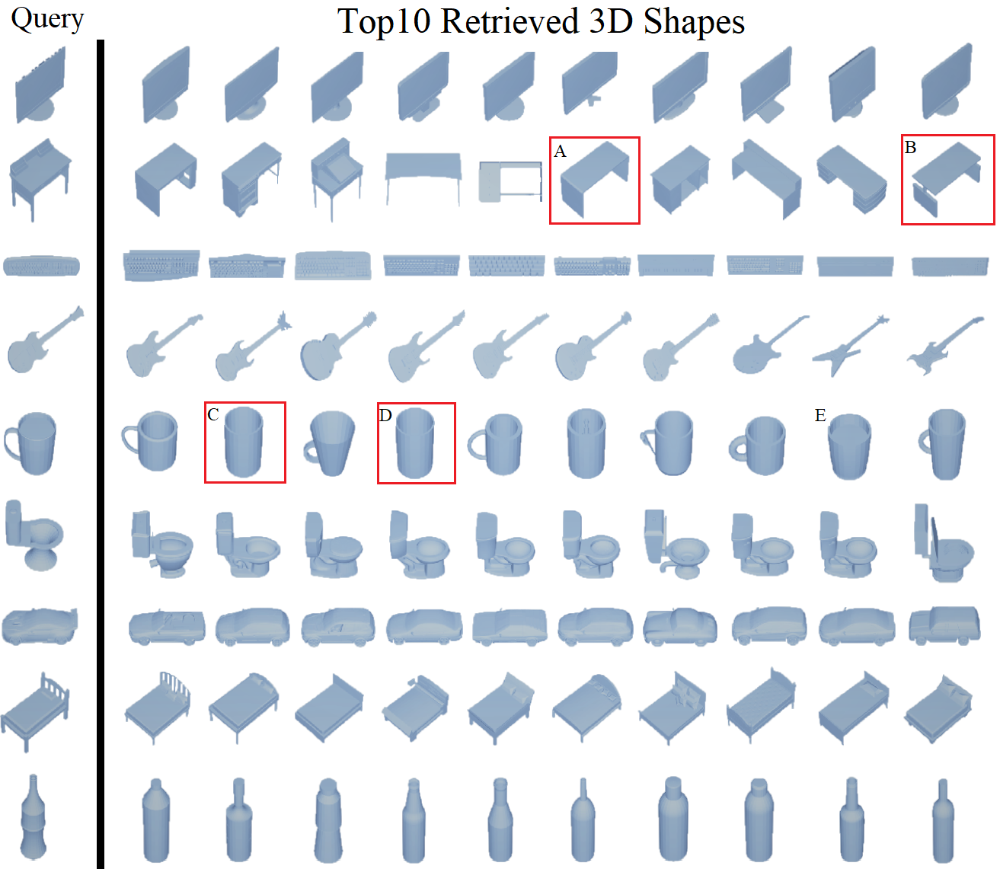

蒋建文, 包迪, 陈自强
现有三维模型表示方法仍然缺乏全面的视图表示能力，传统的简单环路视图会对关键视图出现丢失的情况。针对这一问题，本项目提出了基于多环路多视图三维模型的表示框架及其神经网络模型，有效提高了三维模型检索任务中的精度性能。该方法应用多个正交的环路对三维物体进行多视图投影，环路内有序的采集顺序能够保证强时序关系的视图信息的获取。基于该形式得到多组正交环路视图后，多环路多视图三维模型从视图层级、环路层级、物体层级逐级抽取特征，最后联合得到三维模型的全局特征表示。在视图层级中，全卷积神经网络被用于视图级特征抽取，将得到的特征经过环路正则化模块得到了环路区分的视图级特征。在这基础上我们再使用时序关系模型对同一个环路内的视图进行时序建模得到环路级视图特征，最后融合多个环路特征得到三维模型的全局特征表示。 我们在公开数据集ModelNet40上进行了实验，在检索性能上大幅度超越现有方法。并且我们基于该方法，在针对多视图多环路框架中的视图数量、环路数量的调研结果显示在随着视图/环路数量的增加，检索/分类性能都随之稳步提升，表现了方法的鲁棒性以及可以对从更多的视图中稳定获取更多的提升。相关研究工作已在AAAI 2019上做口头报告。

图 1. 多环路视图框架示意。对一个三维物体我们从多个环路进行视图获取，从而获得更全面的视图表示，图为一个基本的三个正交环路配置。

图 2. 在ModelNet40数据集上的检索结果:左边为被查询的物体，右边为排序前十的检索结果，红色标记为一些错误检索。